mixpoissonreg in the tidyverse
Alexandre B. Simas
2021-03-05
Source:vignettes/tidyverse-mixpoissonreg.Rmd
tidyverse-mixpoissonreg.Rmd
augment, glance and tidy methods
The mixpoissonreg package provides the augment, glance and tidy methods following the same spirit as the corresponding methods found in the broom package.
We will now provide a few examples of outputs and applications of these methods to mixpoissonreg objects.
augment
The augment method for mixpoissonreg objects provides a tibble::tibble with several important quantities such as residuals, Cook’s distance, generalized Cook’s distance, the model’s matrix, confidence intervals for the means, etc.
library(mixpoissonreg)
fit <- mixpoissonreg(daysabs ~ gender + math + prog | prog,
model = "PIG", data = Attendance)
augment(fit)
#> # A tibble: 314 x 12
#> daysabs gender math prog .fitted .fittedlwrconf .fitteduprconf .resid
#> <dbl> <fct> <dbl> <fct> <dbl> <dbl> <dbl> <dbl>
#> 1 4 male 63 Academic 5.00 3.91 6.41 -0.158
#> 2 4 male 27 Academic 6.62 5.23 8.37 -0.316
#> 3 2 female 20 Academic 9.27 7.23 11.9 -0.634
#> 4 3 female 16 Academic 9.56 7.39 12.4 -0.555
#> 5 3 female 2 Academic 10.7 7.94 14.3 -0.584
#> 6 13 female 71 Academic 6.24 4.80 8.10 0.862
#> 7 11 female 63 Academic 6.64 5.20 8.47 0.524
#> 8 7 male 3 Academic 7.98 5.98 10.6 -0.0985
#> 9 10 male 51 Academic 5.49 4.37 6.91 0.648
#> 10 9 male 49 Vocational 2.52 1.81 3.52 1.57
#> # … with 304 more rows, and 4 more variables: .resfit <dbl>, .hat <dbl>,
#> # .cooksd <dbl>, .gencooksd <dbl>One can also set the type of fitted values by changing the type.predict argument, where the options are “response” (the default), “link”, “precision”, “variance”.
augment(fit, type.predict = "link")
#> # A tibble: 314 x 12
#> daysabs gender math prog .fitted .fittedlwrconf .fitteduprconf .resid
#> <dbl> <fct> <dbl> <fct> <dbl> <dbl> <dbl> <dbl>
#> 1 4 male 63 Academic 1.61 1.36 1.86 -0.158
#> 2 4 male 27 Academic 1.89 1.66 2.13 -0.316
#> 3 2 female 20 Academic 2.23 1.98 2.48 -0.634
#> 4 3 female 16 Academic 2.26 2.00 2.52 -0.555
#> 5 3 female 2 Academic 2.37 2.07 2.66 -0.584
#> 6 13 female 71 Academic 1.83 1.57 2.09 0.862
#> 7 11 female 63 Academic 1.89 1.65 2.14 0.524
#> 8 7 male 3 Academic 2.08 1.79 2.36 -0.0985
#> 9 10 male 51 Academic 1.70 1.47 1.93 0.648
#> 10 9 male 49 Vocational 0.926 0.594 1.26 1.57
#> # … with 304 more rows, and 4 more variables: .resfit <dbl>, .hat <dbl>,
#> # .cooksd <dbl>, .gencooksd <dbl>If type.predict is “link”, one can set se_fit to TRUE to obtain standard errors for the mean parameters in the linear predictor scale.
augment(fit, type.predict = "link", se_fit = TRUE)
#> # A tibble: 314 x 13
#> daysabs gender math prog .fitted .se.fit .fittedlwrconf .fitteduprconf
#> <dbl> <fct> <dbl> <fct> <dbl> <dbl> <dbl> <dbl>
#> 1 4 male 63 Academic 1.61 0.126 1.36 1.86
#> 2 4 male 27 Academic 1.89 0.120 1.66 2.13
#> 3 2 female 20 Academic 2.23 0.127 1.98 2.48
#> 4 3 female 16 Academic 2.26 0.131 2.00 2.52
#> 5 3 female 2 Academic 2.37 0.151 2.07 2.66
#> 6 13 female 71 Academic 1.83 0.133 1.57 2.09
#> 7 11 female 63 Academic 1.89 0.125 1.65 2.14
#> 8 7 male 3 Academic 2.08 0.147 1.79 2.36
#> 9 10 male 51 Academic 1.70 0.117 1.47 1.93
#> 10 9 male 49 Vocational 0.926 0.169 0.594 1.26
#> # … with 304 more rows, and 5 more variables: .resid <dbl>, .resfit <dbl>,
#> # .hat <dbl>, .cooksd <dbl>, .gencooksd <dbl>By default the augment method returns the Pearson’s residuals. To return the score residuals one simply has to set the type.residuals argument to “score”:
augment(fit, type.residuals = "score")
#> # A tibble: 314 x 12
#> daysabs gender math prog .fitted .fittedlwrconf .fitteduprconf .resid
#> <dbl> <fct> <dbl> <fct> <dbl> <dbl> <dbl> <dbl>
#> 1 4 male 63 Academic 5.00 3.91 6.41 0.189
#> 2 4 male 27 Academic 6.62 5.23 8.37 -0.00561
#> 3 2 female 20 Academic 9.27 7.23 11.9 -0.839
#> 4 3 female 16 Academic 9.56 7.39 12.4 -0.542
#> 5 3 female 2 Academic 10.7 7.94 14.3 -0.642
#> 6 13 female 71 Academic 6.24 4.80 8.10 0.980
#> 7 11 female 63 Academic 6.64 5.20 8.47 0.790
#> 8 7 male 3 Academic 7.98 5.98 10.6 0.312
#> 9 10 male 51 Academic 5.49 4.37 6.91 0.851
#> 10 9 male 49 Vocation… 2.52 1.81 3.52 1.11
#> # … with 304 more rows, and 4 more variables: .resfit <dbl>, .hat <dbl>,
#> # .cooksd <dbl>, .gencooksd <dbl>It is possible to obtain predictions for newdata by using the newdata argument. To such an end, the newdata argument must be set to a data.frame object containing the values of the covariates for which the predictions are desired. For example:
augment(fit, newdata = data.frame(gender = c("male", "female"), math = c(34, 85),
prog = factor(c("General", "Academic"),
levels = c("General", "Academic", "Vocational"))))
#> # A tibble: 2 x 6
#> gender math prog .fitted .fittedlwrconf .fitteduprconf
#> <chr> <dbl> <fct> <dbl> <dbl> <dbl>
#> 1 male 34 General 9.57 7.36 12.5
#> 2 female 85 Academic 5.59 4.14 7.55Notice that in the above example the confidence intervals for the means were returned by default. However, it is important to obtain prediction intervals, i.e., intervals for which the future observations will fall with the prescribed probability. It is important to notice that since we did not obtain an approximate distribution for the response variable, we obtain the prediction intervals by simulation, which is computationally intensive.
To obtain prediction intervals, one must set the pred_int argument to TRUE. The prescribed probability can be set by entering the level argument, the default level is 0.95. With respect to the simulation to obtain prediction intervals, one can change the number of mean and prediction parameters generated by setting the nsim_pred argument to the desired value, the default is 100, and also can change the number of response variables y generated for each pair of mean and precision parameters by setting the nsim_pred_y to the desired value, the default is 100. Finally, we can also set conf_int to FALSE to remove the confidence intervals for the mean.
augment(fit, newdata = data.frame(gender = c("male", "female"), math = c(34, 85),
prog = factor(c("General", "Academic"),
levels = c("General", "Academic", "Vocational"))),
pred_int = TRUE, level = 0.99,
nsim_pred = 50, nsim_pred_y =50,
conf_int = FALSE)
#> Warning in predict.mixpoissonreg(x, newdata = newdata, type = "response", :
#> predictions on current data refer to _future_ responses
#> # A tibble: 2 x 6
#> gender math prog .fitted .fittedlwrpred .fitteduprpred
#> <chr> <dbl> <fct> <dbl> <dbl> <dbl>
#> 1 male 34 General 9.57 0 40
#> 2 female 85 Academic 5.59 0 49With the augment method it is simple to sort the observations by their Cook’s distance or by their generalized Cook’s distance along with their indexes and the model’s matrix in order to facilitate the study of their influence:
library(dplyr)
augment(fit) %>% mutate(.index = row_number()) %>% arrange(desc(.cooksd)) %>%
select(.index, daysabs, gender, math,prog,.cooksd)
#> # A tibble: 314 x 6
#> .index daysabs gender math prog .cooksd
#> <int> <dbl> <fct> <dbl> <fct> <dbl>
#> 1 186 16 male 81 Vocational 0.271
#> 2 260 19 male 49 Vocational 0.261
#> 3 94 29 female 70 General 0.171
#> 4 79 35 male 1 Academic 0.147
#> 5 188 16 female 75 Vocational 0.123
#> 6 150 34 female 29 General 0.108
#> 7 57 28 male 5 General 0.0977
#> 8 254 14 male 43 Vocational 0.0826
#> 9 53 27 male 48 Academic 0.0824
#> 10 105 19 male 70 General 0.0776
#> # … with 304 more rowsand
augment(fit) %>% mutate(.index = row_number()) %>% arrange(desc(.gencooksd)) %>%
select(.index, daysabs, gender, math,prog,.gencooksd)
#> # A tibble: 314 x 6
#> .index daysabs gender math prog .gencooksd
#> <int> <dbl> <fct> <dbl> <fct> <dbl>
#> 1 94 29 female 70 General 0.0739
#> 2 105 19 male 70 General 0.0398
#> 3 150 34 female 29 General 0.0362
#> 4 143 5 female 7 General 0.0350
#> 5 57 28 male 5 General 0.0308
#> 6 186 16 male 81 Vocational 0.0273
#> 7 265 16 female 99 General 0.0239
#> 8 235 3 female 67 General 0.0234
#> 9 260 19 male 49 Vocational 0.0222
#> 10 28 0 female 21 Academic 0.0221
#> # … with 304 more rowsFinally, it is easy to use the augment method to build useful plots. For instance, let us consider a new model containing only “math” as covariate and let us create confidence intervals for the means and prediction intervals for the response variables.
First, the plot with confidence intervals for the means:
library(ggplot2)
fit_math <- mixpoissonreg(daysabs ~ math,
data = Attendance)
fit_data <- augment(fit_math) %>% dplyr::select(math, daysabs) %>%
dplyr::rename("Math Score" = math, "Days Abscent" = daysabs)
new_math <- seq(0, 100, by=0.25)
fit_int <- augment(fit_math, newdata = data.frame(math = new_math)) %>%
dplyr::rename("Math Score" = math) %>% mutate("Days Abscent" = 0)
ggplot(fit_data, aes(x = `Math Score`, y = `Days Abscent`)) + geom_point() +
geom_function(fun = function(x){exp(fit_math$coefficients$mean[1] +
fit_math$coefficients$mean[2]*x)}, colour = "blue") +
geom_ribbon(data = fit_int, aes(ymin = .fittedlwrconf, ymax = .fitteduprconf),
fill = "grey70", alpha = 0.7)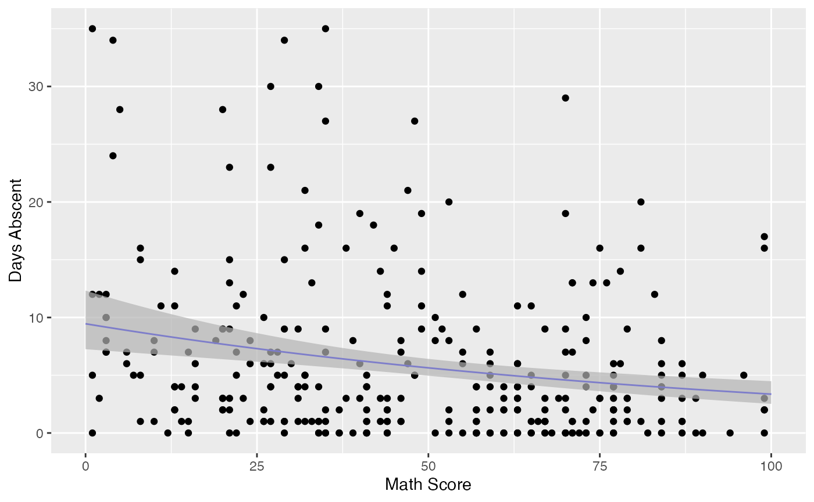
Observe that the confidence intervals tend to be narrow. They are confidence intervals for the means, not for the response variables. The intervals that play the role of “confidence intervals” for response variables are the prediction intervals, which are much wider and provide estimate of intervals for which future observations will fall with the prescribed probability.
Now the plot containing the predictions intervals for the response variables:
fit_pred <- augment(fit_math, newdata = data.frame(math = new_math),
pred_int = TRUE, nsim_pred = 50, nsim_pred_y = 50) %>%
dplyr::rename("Math Score" = math) %>% mutate("Days Abscent" = 0)
ggplot(fit_data, aes(x = `Math Score`, y = `Days Abscent`)) + geom_point() +
geom_function(fun = function(x){exp(fit_math$coefficients$mean[1] +
fit_math$coefficients$mean[2]*x)}, colour = "blue") +
geom_ribbon(data = fit_pred, aes(ymin = .fittedlwrpred, ymax = .fitteduprpred),
fill = "grey70", alpha = 0.7)
glance
The glance method for mixpoissonreg objects only contains one argument, which is the fitted mixpoissonreg object. It returns a tibble::tibble with useful information for constructing tests and also for comparing different fits:
glance(fit)
#> # A tibble: 1 x 9
#> efron.pseudo.r2 df.null logLik AIC BIC df.residual nobs model.type
#> <dbl> <dbl> <dbl> <dbl> <dbl> <int> <int> <chr>
#> 1 0.186 312 -858. 1731. 1761. 306 314 PIG
#> # … with 1 more variable: est.method <chr>Notice that it also contains Efron’s pseudo-\(R^2\), which is essentially an indicator of how well the future predictions will typically be. Basically, if the variance of the response is very high, even though the model may be able to provide a good estimate of the mean, the mean may be a poor estimate of the response variable.
tidy
The tidy method for mixpoissonreg objects provide the parameter’s estimates along with their standard errors, z-statistics and p-values. It has two arguments, a logical conf.int indicating whether confidence intervals for the parameters should be returned and conf.level indicating the confidence level, the default level is 0.95.
For example:
tidy(fit)
#> # A tibble: 8 x 6
#> component term estimate std.error statistic p.value
#> <chr> <chr> <dbl> <dbl> <dbl> <dbl>
#> 1 mean (Intercept) 2.81 0.162 17.3 5.02e-67
#> 2 mean gendermale -0.282 0.123 -2.30 2.15e- 2
#> 3 mean math -0.00777 0.00240 -3.24 1.20e- 3
#> 4 mean progAcademic -0.423 0.148 -2.86 4.28e- 3
#> 5 mean progVocational -1.22 0.197 -6.16 7.11e-10
#> 6 precision (Intercept) 0.928 0.331 2.80 5.04e- 3
#> 7 precision progAcademic -1.28 0.385 -3.32 8.94e- 4
#> 8 precision progVocational -1.74 0.451 -3.87 1.09e- 4and
tidy(fit, conf.int = TRUE)
#> # A tibble: 8 x 8
#> component term estimate std.error statistic p.value conf.low conf.high
#> <chr> <chr> <dbl> <dbl> <dbl> <dbl> <dbl> <dbl>
#> 1 mean (Intercept) 2.81 0.162 17.3 5.02e-67 2.49 3.12
#> 2 mean gendermale -0.282 0.123 -2.30 2.15e- 2 -0.523 -0.0417
#> 3 mean math -0.00777 0.00240 -3.24 1.20e- 3 -0.0125 -0.00307
#> 4 mean progAcadem… -0.423 0.148 -2.86 4.28e- 3 -0.713 -0.133
#> 5 mean progVocati… -1.22 0.197 -6.16 7.11e-10 -1.60 -0.829
#> 6 precision (Intercept) 0.928 0.331 2.80 5.04e- 3 0.279 1.58
#> 7 precision progAcadem… -1.28 0.385 -3.32 8.94e- 4 -2.03 -0.525
#> 8 precision progVocati… -1.74 0.451 -3.87 1.09e- 4 -2.63 -0.861One can also use the tidy method to build plots of the mean-related coefficients and precision-related coefficients with confidence intervals:
tidy(fit, conf.int = TRUE) %>%
ggplot(aes(x = term, y = estimate)) + geom_point() +
geom_errorbar(aes(ymin = conf.low, ymax = conf.high), width = 0.2) +
theme(axis.text.x = element_text(angle=45)) +
scale_x_discrete(name = "Coefficient") +
scale_y_continuous(name = "Estimate") +
facet_wrap(~ component)or separately (since the precision regression structure does not contain all the covariates)
library(gridExtra)
pmean <- tidy(fit, conf.int = TRUE) %>% filter(component == "mean") %>%
ggplot(aes(x = term, y = estimate)) + geom_point() +
geom_errorbar(aes(ymin = conf.low, ymax = conf.high), width = 0.2) +
theme(axis.text.x = element_text(angle=45)) +
scale_x_discrete(name = "Coefficient") +
scale_y_continuous(name = "Estimate") +
facet_wrap(~ component)
pprecision <- tidy(fit, conf.int = TRUE) %>% filter(component == "precision") %>%
ggplot(aes(x = term, y = estimate)) + geom_point() +
geom_errorbar(aes(ymin = conf.low, ymax = conf.high), width = 0.2) +
theme(axis.text.x = element_text(angle=45)) +
scale_x_discrete(name = "Coefficient") +
scale_y_continuous(name = element_blank()) +
facet_wrap(~ component)
grid.arrange(pmean, pprecision, ncol=2)
tidy_local_influence and local_influence_benchmarks methods
The tidy_local_influence method for mixpoissonreg objects has, besides the model argument, all the arguments of the local_influence method for mixpoissonreg objects. For details on these arguments we refer the reader to the Global and local influence analysis with the mixpoissonreg package vignette.
When we call the tidy_local_influence method it returns a nice tibble::tibble containing the curvatures under the chosen perturbation schemes. For example:
tidy_local_influence(fit)
#> # A tibble: 314 x 5
#> case_weights hidden_variable mean_explanatory precision_explanatory
#> <dbl> <dbl> <dbl> <dbl>
#> 1 0.000948 0.000493 0.000358 0.00255
#> 2 0.000526 0.000433 0.000580 0.00191
#> 3 0.00155 0.000516 0.000518 0.0000402
#> 4 0.000380 0.000527 0.000737 0.000191
#> 5 0.000841 0.000732 0.000867 0.0000561
#> 6 0.00200 0.00472 0.00447 0.00233
#> 7 0.00186 0.00279 0.00347 0.00302
#> 8 0.00143 0.00167 0.00186 0.00315
#> 9 0.00179 0.00221 0.00220 0.00277
#> 10 0.00335 0.00396 0.000388 0.00298
#> # … with 304 more rows, and 1 more variable: simultaneous_explanatory <dbl>One can, for instance, change the curvature and the direction:
tidy_local_influence(fit, curvature = "normal",
direction = "max.eigen")
#> # A tibble: 314 x 5
#> case_weights hidden_variable mean_explanatory precision_explanatory
#> <dbl> <dbl> <dbl> <dbl>
#> 1 -0.0541 0.00496 -0.0189 -0.0505
#> 2 -0.0379 -0.00703 -0.0241 -0.0437
#> 3 0.0587 -0.0174 -0.0228 0.00634
#> 4 0.0199 -0.0234 -0.0272 -0.0138
#> 5 0.0308 -0.0283 -0.0294 -0.00749
#> 6 -0.0641 -0.0255 -0.0668 -0.0482
#> 7 -0.0713 -0.0286 -0.0589 -0.0549
#> 8 -0.0641 -0.0260 -0.0432 -0.0561
#> 9 -0.0719 0.00166 -0.0469 -0.0527
#> 10 -0.00232 0.0122 -0.0197 -0.0546
#> # … with 304 more rows, and 1 more variable: simultaneous_explanatory <dbl>Useful plots of the local influence measures can be obtained by using the local_influence_autoplot method.
The local_influence_benchmarks method for mixpoissonreg objects returns the benchmarks for the different perturbation schemes. We use the benchmarks suggested by Zhu and Lee (2001) for conformal normal curvatures and the benchmarks suggested by Verbeke and Molenberghs (2000, sect. 11.3) for normal curvatures. For direction = "max.eigen", no benchmark is provided.
When we call the local_influence_benchmarks method it returns a tibble::tibble containing the benchmarks for the chosen perturbation schemes. For example:
local_influence_benchmarks(fit)
#> # A tibble: 1 x 5
#> case_weights hidden_variable mean_explanatory precision_explanatory
#> <dbl> <dbl> <dbl> <dbl>
#> 1 0.0114 0.0162 0.0196 0.0149
#> # … with 1 more variable: simultaneous_explanatory <dbl>One possible application is the following: select the observations whose curvature are above the benchmarks, then left_join this tibble with a subset of the tibble returned by the augment method containing the model’s matrix. This facilitates the study of the influential observations.
library(tidyr)
inf_tbl <- tidy_local_influence(fit) %>% mutate(.index = row_number()) %>%
pivot_longer(!.index, names_to = "perturbation", values_to = "curvature")
bench_tbl <- local_influence_benchmarks(fit) %>%
pivot_longer(everything(), names_to = "perturbation", values_to = "benchmark")
inf_bench_tbl <- left_join(inf_tbl, bench_tbl, by = "perturbation") %>%
mutate(influential = curvature > benchmark) %>% filter(influential == TRUE) %>%
select(-influential, -benchmark, -curvature)
data_tbl <- augment(fit) %>% mutate(.index = row_number()) %>%
select(.index, daysabs, gender, math, prog)
influential <- left_join(inf_bench_tbl, data_tbl, by = ".index")
influential
#> # A tibble: 64 x 6
#> .index perturbation daysabs gender math prog
#> <int> <chr> <dbl> <fct> <dbl> <fct>
#> 1 20 hidden_variable 24 male 4 Academic
#> 2 20 mean_explanatory 24 male 4 Academic
#> 3 20 simultaneous_explanatory 24 male 4 Academic
#> 4 28 case_weights 0 female 21 Academic
#> 5 31 case_weights 0 male 1 Academic
#> 6 36 hidden_variable 28 female 20 Academic
#> 7 36 mean_explanatory 28 female 20 Academic
#> 8 36 simultaneous_explanatory 28 female 20 Academic
#> 9 39 precision_explanatory 5 male 1 General
#> 10 40 mean_explanatory 27 female 35 Academic
#> # … with 54 more rowsIt is easy to see that the above tibble is very helpful in the study of influential observations.
One can also easily count how many observations have curvature above the benchmark considering all the perturbation schemes:
autoplot and local_influence_autoplot methods
The autoplot method for mixpoissonreg objects provides 6 useful plots for diagnostic analysis. By default, it provides the following plots: “Residuals vs Obs. number”, “Normal Q-Q”, “Cook’s dist vs Generalized Cook’s dist” and “Response vs Fitted means”. These plots are obtained by simply calling the autoplot method:
autoplot(fit)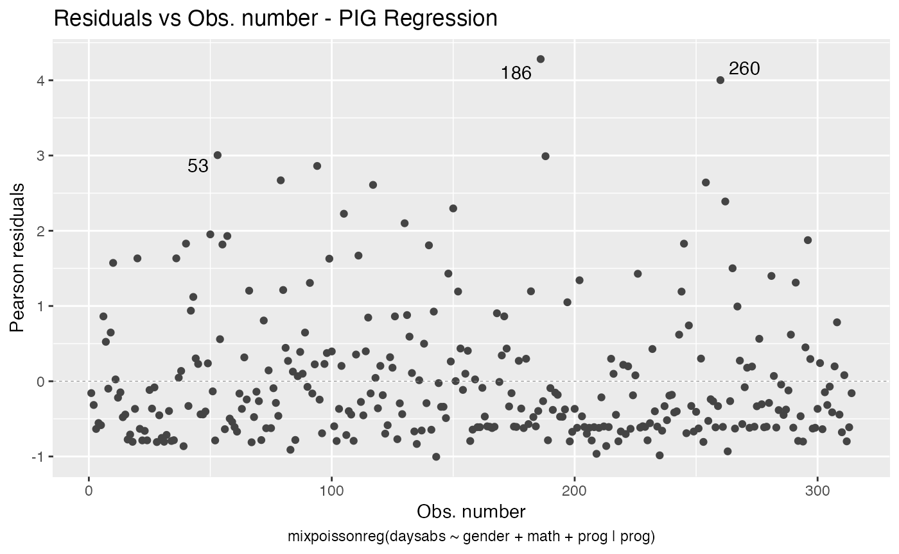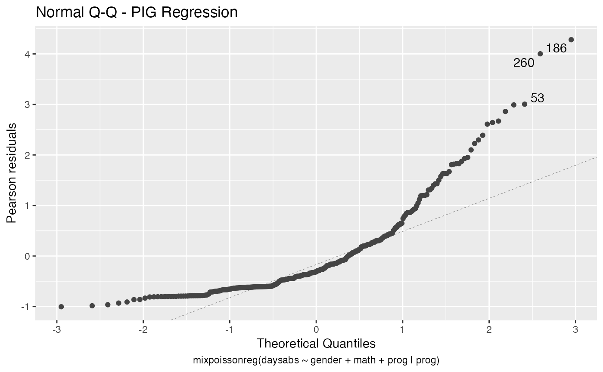
Notice that it automatically identify the label.n most extreme points. The default value for label.n is 3.
If the model is fitted with simulated envelopes, then the envelopes are automatically plotted. In the example below we will consider the estimation obtained by direct maximization of likelihood function to reduce computational cost.
fit_env <- mixpoissonregML(daysabs ~ gender + math + prog | prog,
model = "PIG", data = Attendance,
envelope = 100)
autoplot(fit_env)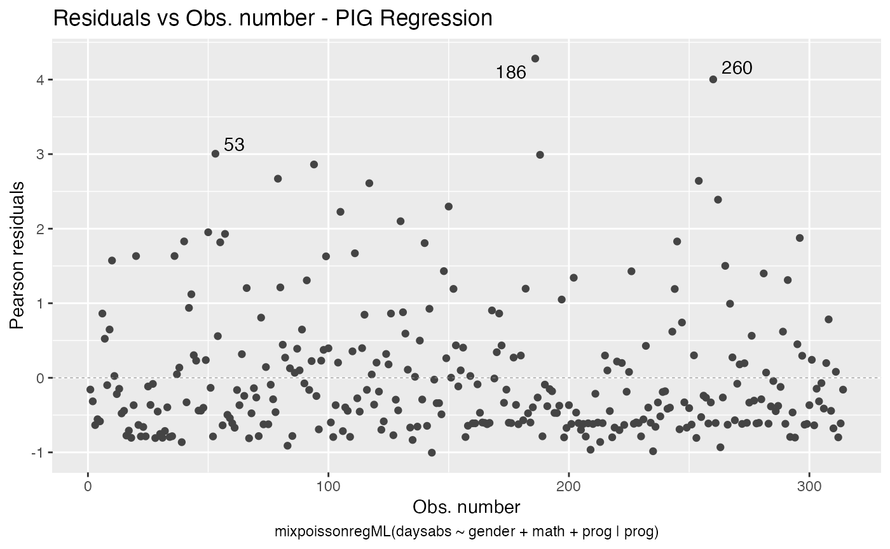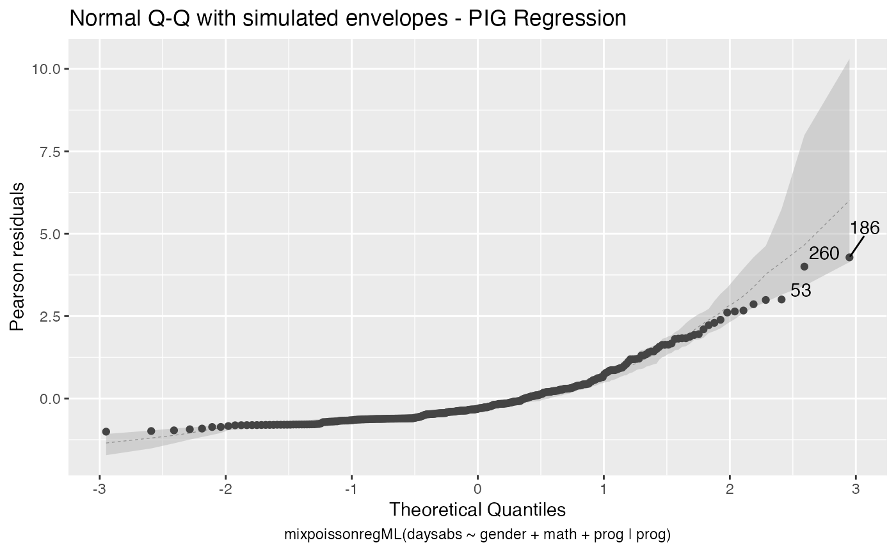
We can easily plot Cook’s distance and generalized Cook’s distance by including in the which argument the numbers 3 (Cook’s distance) and 4 (generalized Cook’s distance):
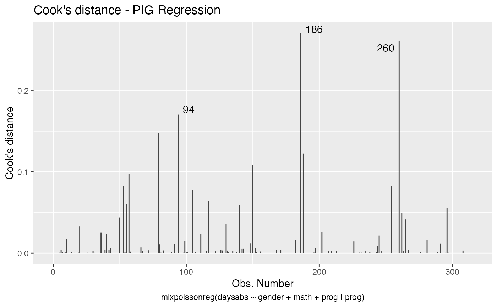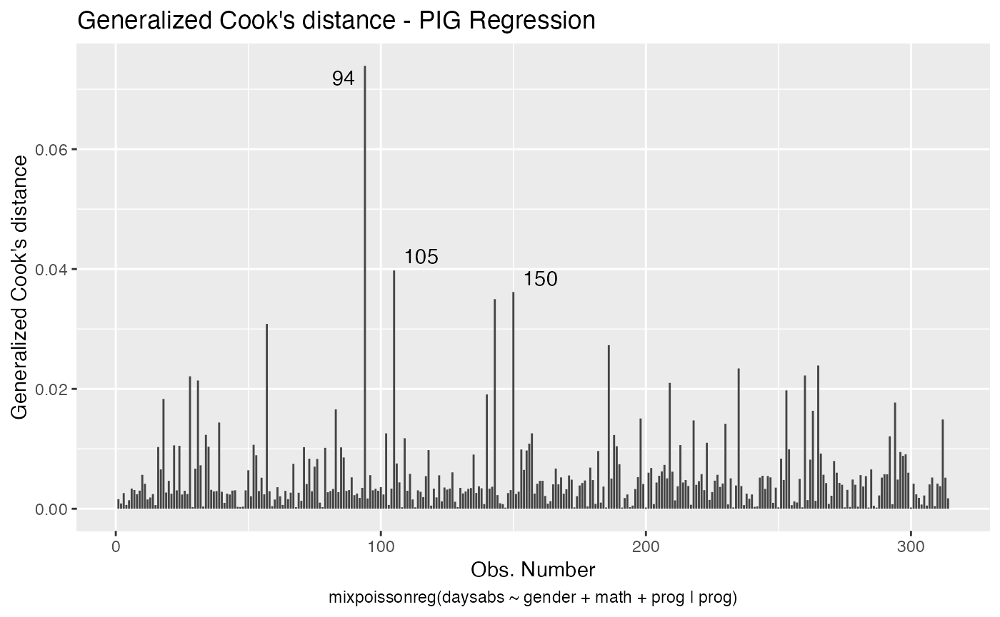
There are also several options to customize the appearance of the plots. Several of these options are presented in the Building and customizing ggplot2-based diagnostic plots with the mixpoissonreg package vignette.
The local_influence_autoplot provides plots of the curvatures under the perturbation schemes for all the possible combinations of arguments of the local_influence method. We refer the reader to the Global and local influence analysis with the mixpoissonreg package vignette for further details on these arguments.
If the direction argument is set to “canonical” (the default), then the n.influential points above the benchmarks are automatically identified, where the default value for n.influential is 5. Recall that we use the benchmarks suggested by Zhu and Lee (2001) for conformal normal curvatures and the benchmarks suggested by Verbeke and Molenberghs (2000, sect. 11.3) for normal curvatures. For direction = "max.eigen", no benchmark is provided. In this case, the local_influence_autoplot method automatically identifies the n.influential most extremes points.
Let us build these plots. First, the standard arguments provide the plots of conformal normal curvature in the canonical directions for the “case_weights”, “hidden_variable”, “mean_explanatory” and “precision_explanatory” perturbation schemes with “case_weights” and “hidden_variable” being computed for all parameters, and the explanatory perturbations being computed for all covariates:
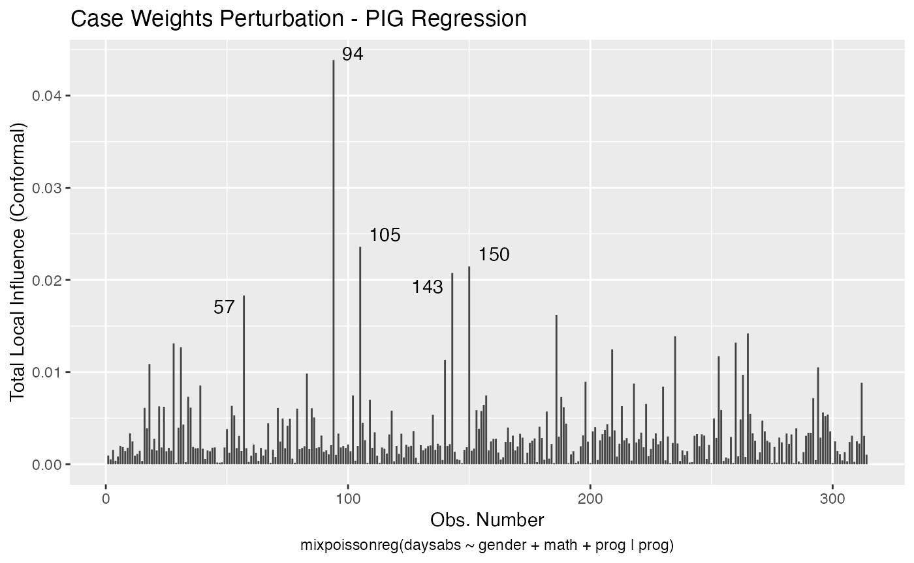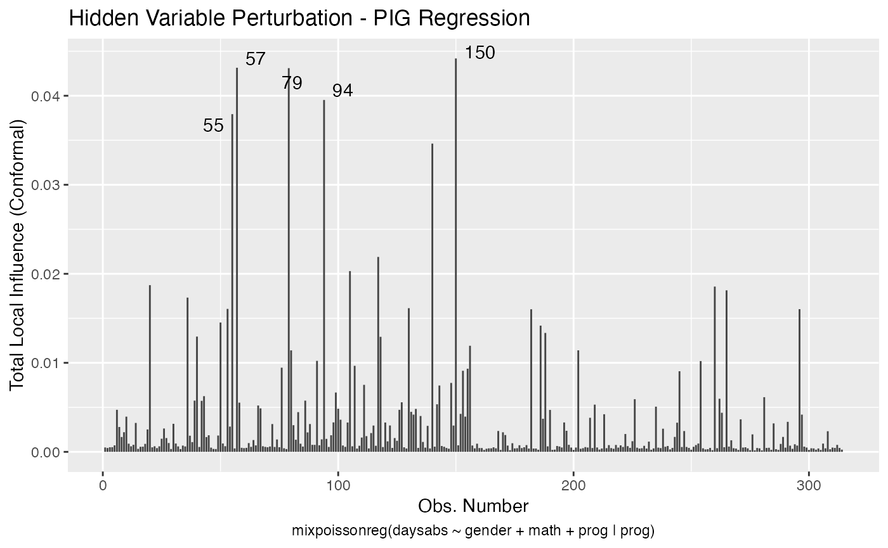
To change to normal curvature simply set the curvature argument to “normal”:
local_influence_autoplot(fit, curvature = "normal")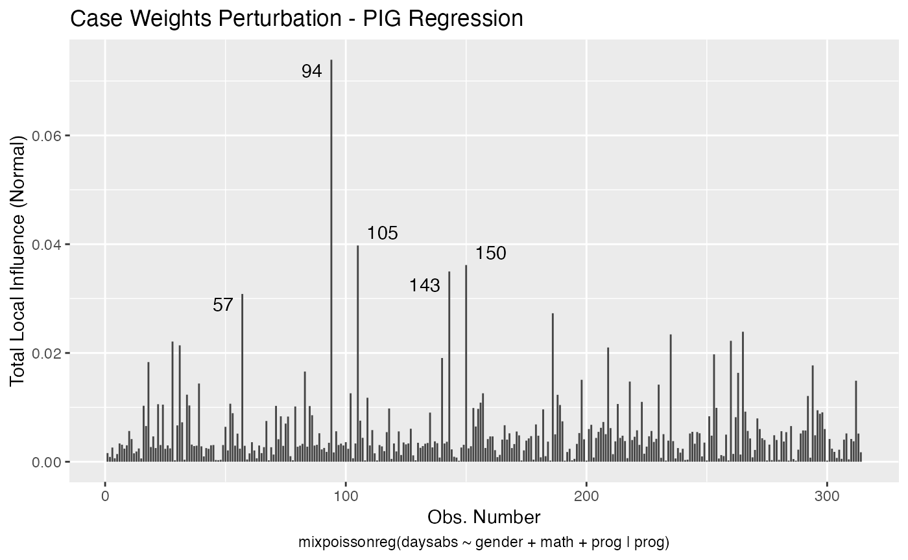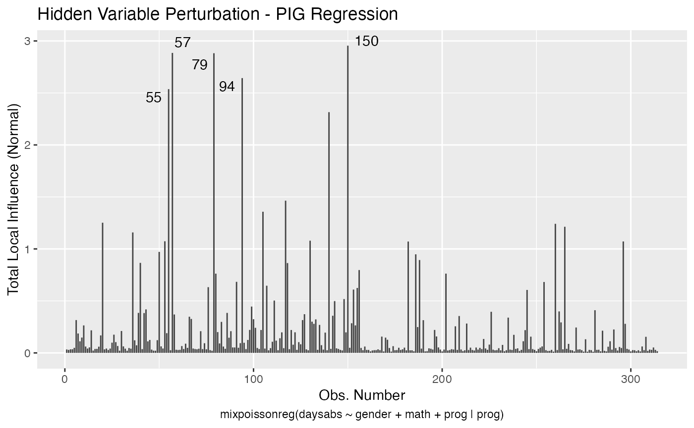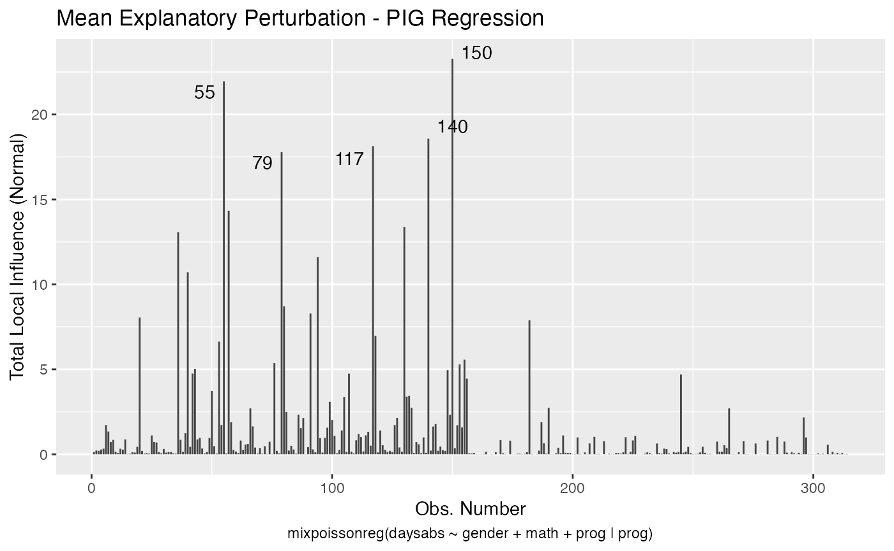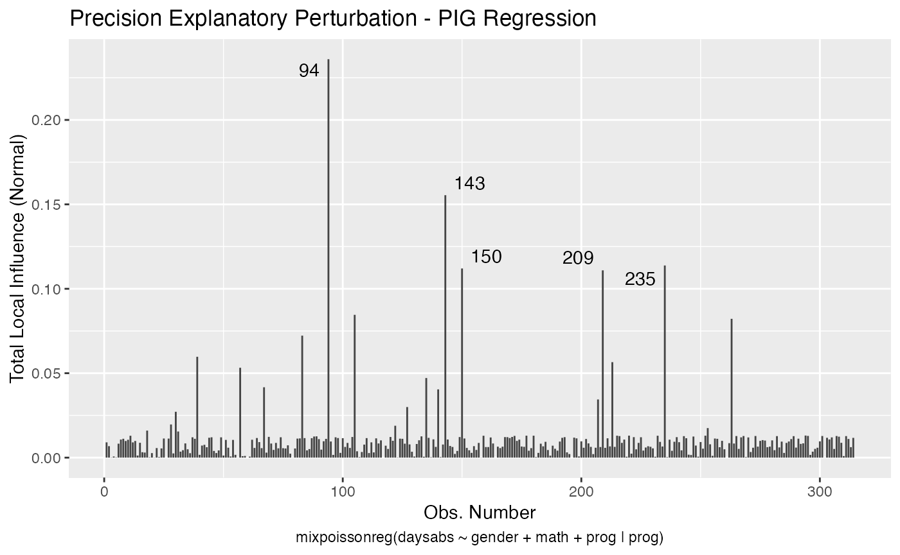
We can change the perturbations schemes to be displayed by providing a list or vector containing the numbers relative to the wanted perturbations. The number 1 is the case weights perturbation, number 2 is the hidden variable perturbation, number 3 is mean explanatory perturbation, number 4 is precision explanatory perturbation and number 5 is simultaneous explanatory perturbation.
local_influence_autoplot(fit, which = c(1,2))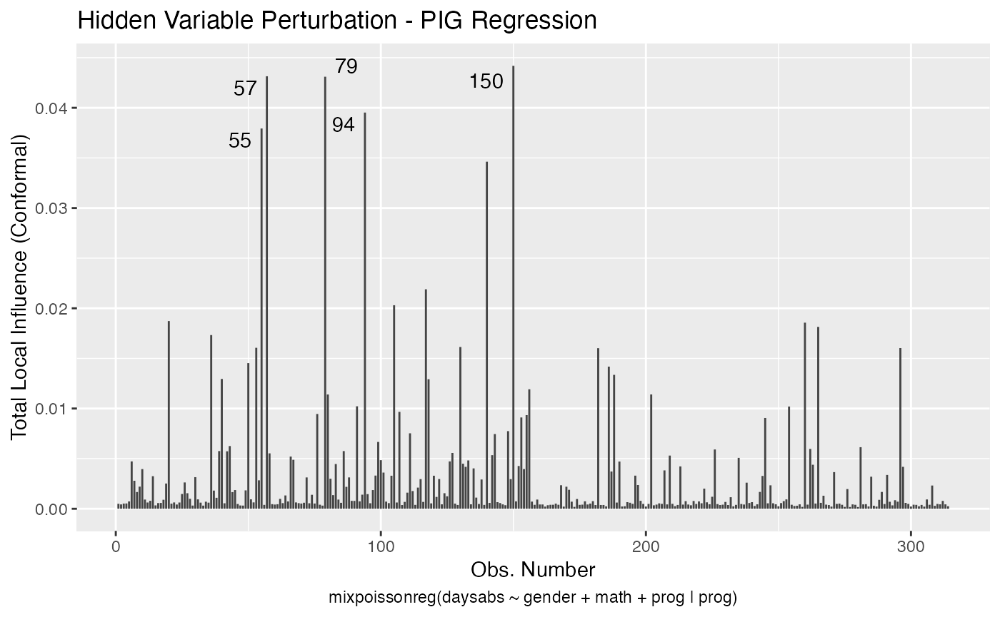
We can draw the benchmark line (when direction is “canonical”) by setting the draw.benchmark argument to TRUE:
local_influence_autoplot(fit, draw.benchmark = TRUE)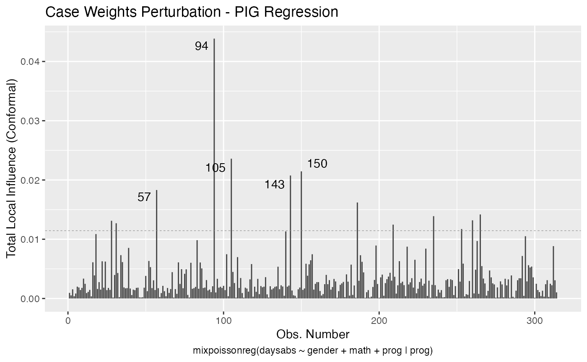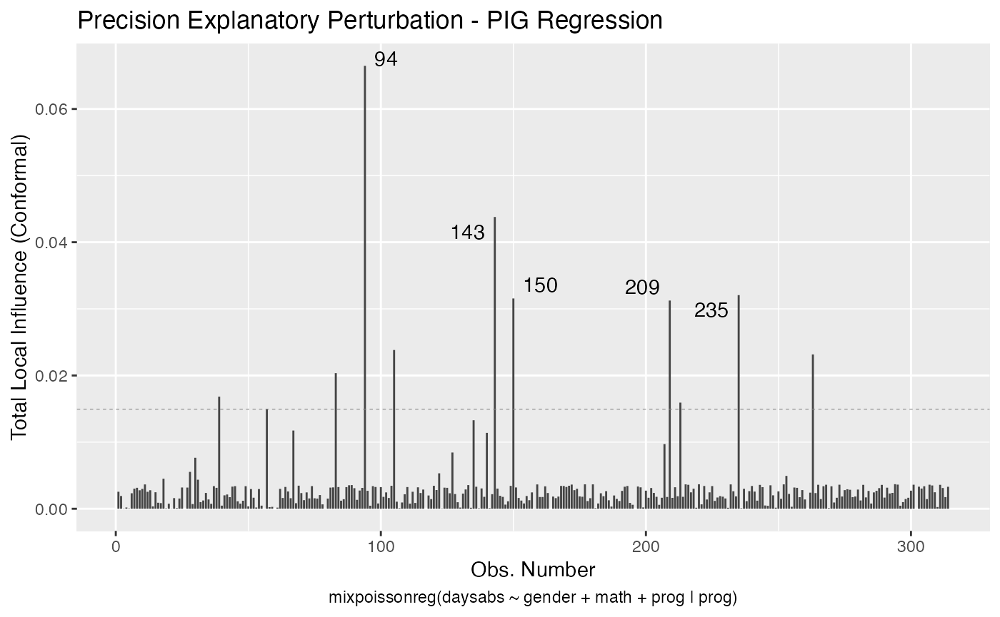